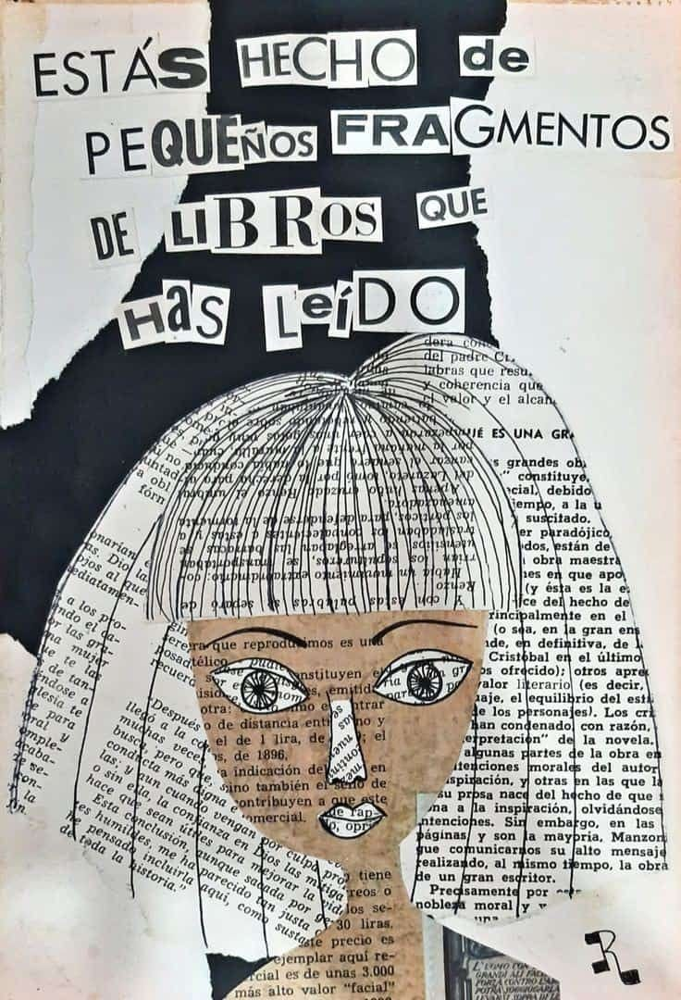

Lectores creativos
"Lo que hace interesante leer es el hecho que tienes más opciones de acción y respuesta a muchas cosas; la lectura abre puertas increíbles de aprendizaje y vida."

Si te das cuenta, la imagen tiene una frase interesante sobre leer y el efecto que causa en las personas, aparte tiene una composición que nos inclina a pensar y relacionar imagen-texto.
Actividad 3: Composiciones mixtas
Lee y observa con cuidado la imagen previa y realiza las siguientes actividades en tu cuaderno de área:
1. ¿Qué significado te deja la frase inicial? Explica
2. ¿Crees que haya relación entre la forma de las letras y el mensaje?
Toda la actividad será evaluada en la sesión presencial.